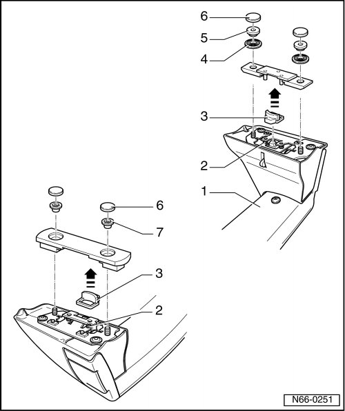

Roof Luggage Carrier Repair Kit Assembly Overview
Roof Luggage Carrier
Roof Luggage Carrier Repair Kit Assembly Overview

1 Front roof luggage carrier bar
2 Spring
• Quantity: 4
3 Protective lug
• Quantity: 2
4 Ball bearing roller
• Quantity: 2
5 Ball bearing roller nut
• Quantity: 2
• 6 Nm
6 Cap
• Quantity: 4
7 Conical nut
• Quantity: 2